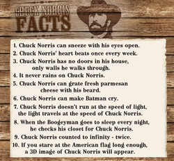

A list poem is just what it says - a list. One thing a list poem is not though, is a random list. Most list poems are thought out and are not just casual items. List poems try to get the reader to stop and think about what is on the list.|
The Sources of: grayness softness redness squeaks cold sights noises in the night |
Things That: ring light you find in the grocery hear in your house smell in the school are round/square are red/blue/green/black |
Things: to do waiting for the bus to do trying to fall asleep you should have done you should not have done that make you feel tall that make you feel small that you tell your mother |
|
THINGS KIDS SAY WHEN THEY WANT TO GET OUT TO PLAY --I did all my homework. --I picked up my toys. --I empitied the trash. --My bed is made. No, there are no lumps. --I ate all my vegetables. --But everyone else is. --Bobby's mom doesn't make him. --But, Mom. --No, my dirty clothes aren't under the bed. --Yes, Mom, I'm sure. --Yeah, I'll be careful.. No, I won't poke an eye out. --Oh, please! ---James Franco (Grade 6) |
CAN YOU IMAGINE... A city without violence This classroom in silence Basketball without a ball Temecula without a mall Ducks wearing lipstick No barbecue at a picnic Sky without stars Jail with no bars Pepsi without caffeine Every night having the same dream? ---Jon Heder (Grade 10) |